| 日付 | 2013年11月22日（金） |
|---|---|
| 山域 | 奥多摩 |
| メンバー | 友人（男4） |
| 山行形態 | 日帰り |
| アクセス | 車 |
| ルート (Map) | 都民の森 (9:24) - (9:48) 三頭ノ大滝 - (10:45) ムシカリ峠 - (11:00) 三頭山西峰 (11:48) - (13:15) 都民の森 |
本日は会社の特別休日。再び会社の同期と山に行くことにする。
目的地は奥多摩の三頭山。奥多摩の山に登るのは実に3年ぶりだ。
今回は友人の車でアクセス。
都民の森駐車場に到着する。標高990m。
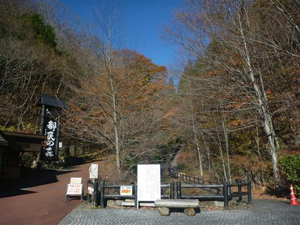
森林館まで緩やかな傾斜の道を歩いていく。
紅葉はもう終わりかけだが、少し色づいた葉が残っている。
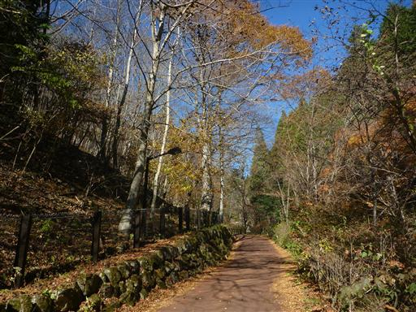
森林館から登山道が始まる。この辺りの道はよく整備されている。
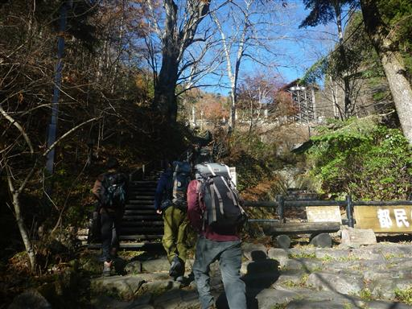
途中で展望が大きく広がる。
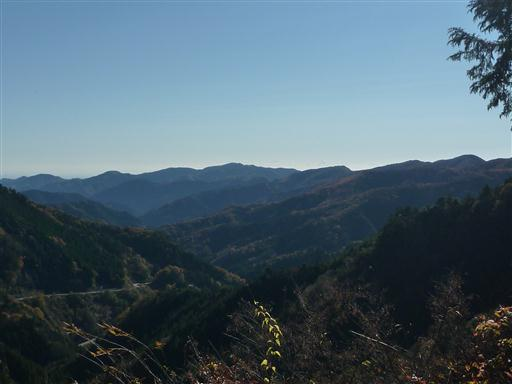
黄葉が非常に美しい。
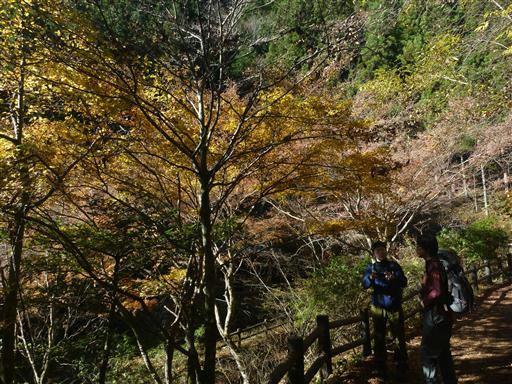
歩きやすい道が続く。ここの紅葉もきれいだ。
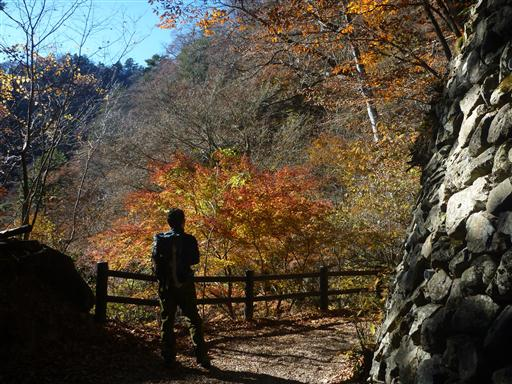
吊橋に到着。この吊橋の先に道はなく、三頭ノ大滝を見るためだけに架けられている。
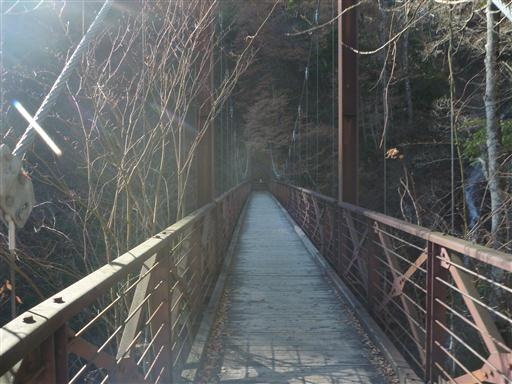
吊橋から望む三頭ノ大滝。迫力のない滝で、滝と言うより急流だ。
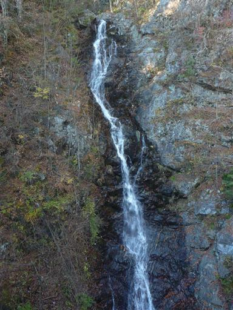
シモバシラの氷柱があちらこちらで見られる。
紛らわしいが「シモバシラ」という名前の植物で、植物が放出する水分が凍ってできている。
ちょうど5年前にもここのコースを歩いていて、全く同じ現象を観察している。
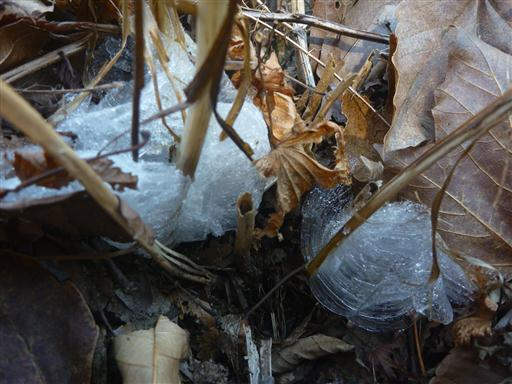
標高の高いところの木々は葉をすべて落としている。
頭上は美しい青空で山頂は展望がよさそうだ。
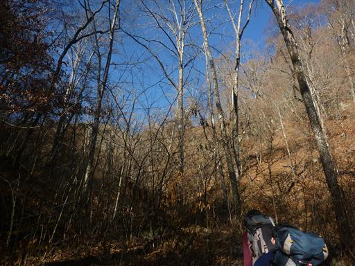
ムシカリ峠で稜線に達すると、そこから山頂までは明るい尾根歩きだ。
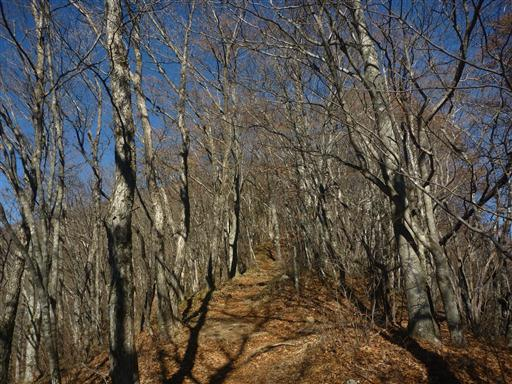
三頭山西峰に到着する。
登山道に人影は少なかったが、平日なのに山頂にはそれなりに人がいる。
さすがは人気の山だ。
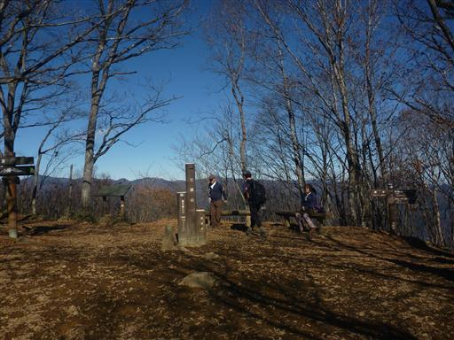
山頂からは富士山方面の木が刈り払われており、その姿がよく見える。
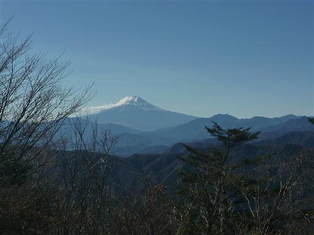
こちらは雲取山。奥多摩の主峰だ。
雲取山は一度行ったきりで、長い間再訪できていない。
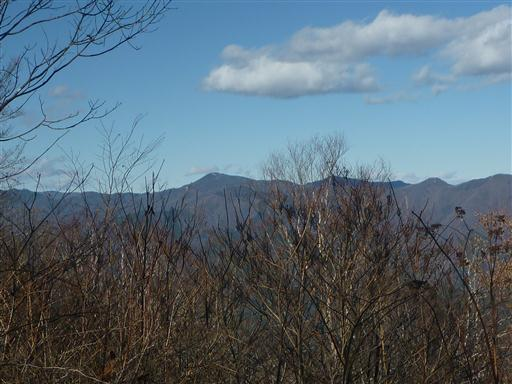
山頂で昼食をとったら三頭山の山頂を巡る。
三頭山というだけあって山頂は3つある。こちらは中央峰。
小さなピークであまり山頂という感じはしないが、三頭山の最高地点はここだ。標高1531m。
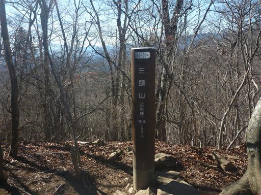
続いて東峰。三角点があるのはここ。こちらも小さなピークだ。
三峰で一番標高の低い西峰が一番山頂らしい場所だ。
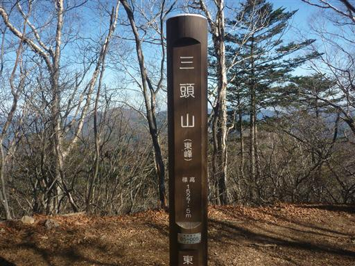
東峰近くには展望台が設けられている。
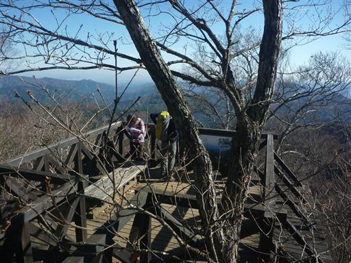
ここからは奥多摩三山の残り二峰、御前山と大岳山を望める。
5年前に縦走した山々だ。
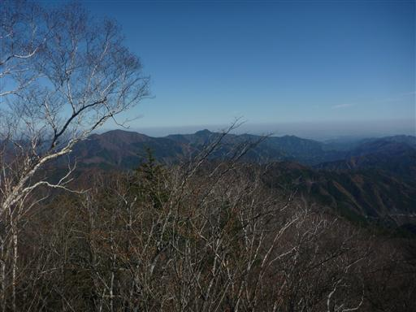
山頂巡りをしたら下山を開始する。自然がよく残っていて、ところどころで巨木が見られる。
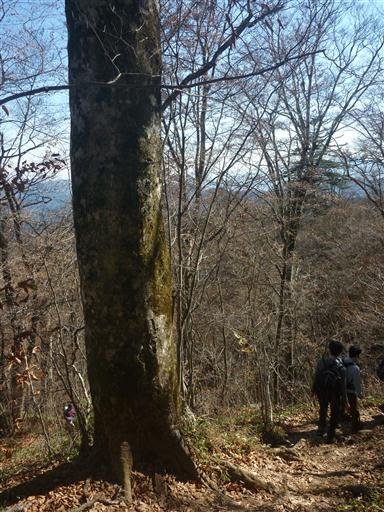
森林館に下山する。遠足と思われる小学生の団体を見かける。
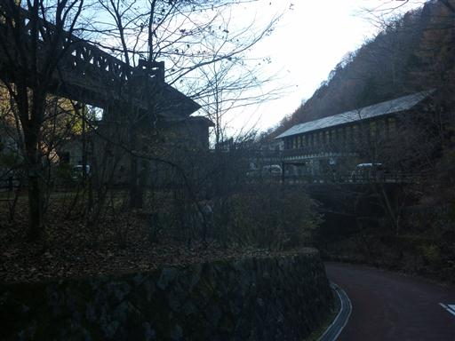
駐車場に到着。来たときはガラガラだったのに、ほぼ車で埋まっている。
平日でこれなら休日は大混雑だろう。
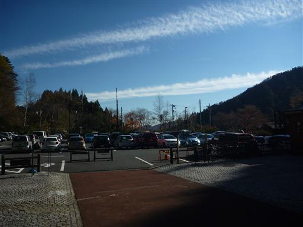
帰りに数馬の湯に寄って帰る。この温泉に来るのは恐らく初めてだ。
4時間弱のお手軽ハイキングだったが、久しぶりの快晴で展望に恵まれた登山だった。
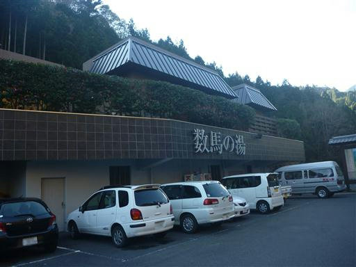